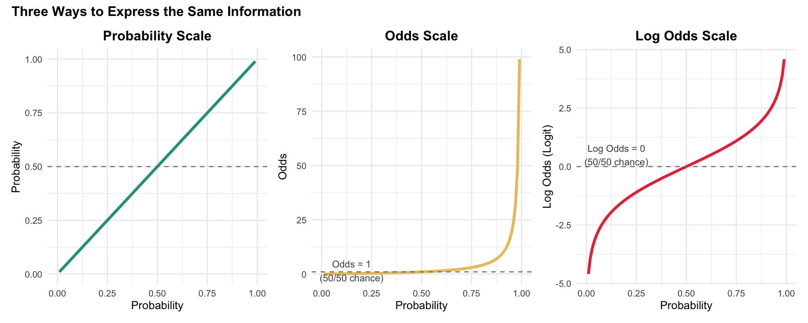

Logistic Regression in Healthcare Management
MBA642: Business Analytics in Healthcare Management
1 Introduction to Logistic Regression
1.1 Why Logistic Regression Matters in Healthcare
In healthcare management, many of the most critical decisions involve predicting binary outcomes. For example,
- Events that either happen vs. don’t happen?
- Will a patient be readmitted within 30 days or not?
- Will a patient adhere to their medication regimen or not?
- Will a treatment be successful or not?
These yes/no questions are fundamentally different from predicting continuous outcomes like blood pressure or length of stay.
Let’s think about the following scenario:
A hospital administrator wants to identify patients at high risk of readmission (returning to the hospital after being released) so that care coordinators can provide additional support before discharge. The outcome variable, readmission, can only take two values: YES (the patient was readmitted) or NO (the patient was not readmitted). We cannot use regular linear regression for this problem because linear regression is designed to predict continuous outcomes that can take any value.
Logistic regression is an appropriate statistical technique when your outcome variable is binary. It allows us to:
- Predict the probability that an event will occur
- Identify which factors increase or decrease the likelihood of the outcome
- Quantify the strength of each predictor’s effect using odds ratios
- Make data-driven decisions about resource allocation and interventions
1.2 The Problem with Linear Regression for Binary Outcomes
You might wonder why we cannot just use linear regression to predict a binary outcome coded as 0 and 1. Let’s understand why this approach fails.
Imagine we want to predict whether a patient will be readmitted (coded as 1) or not (coded as 0) based on their satisfaction score. If we use linear regression, we might get an equation like:
\[P(\text{Readmission}) = 0.8 - 0.1 \times \text{Satisfaction}\]
This seems reasonable at first, but there’s a fundamental problem. What if a patient has a very high satisfaction score of 10?
\[P(\text{Readmission}) = 0.8 - 0.1 \times 10 = -0.2\]
We get a negative probability! But probabilities must be between 0 and 1. Similarly, for patients with very low satisfaction, we could get probabilities greater than 1. This is nonsensical. You cannot have a -20% chance or a 140% chance of being readmitted.
Linear regression assumes a straight-line relationship that extends infinitely in both directions. But probabilities are bounded between 0 and 1. We need a different approach that respects these boundaries.
1.3 The Logistic Solution: An S-Shaped Curve
Logistic regression solves this problem by using a special S-shaped curve (called the logistic function) that naturally stays between 0 and 1. Instead of predicting the probability directly with a straight line, logistic regression:
- Transforms the probability into something called log odds
- Models the log odds as a linear function of the predictors
- Transforms the result back to a probability
This transformation ensures that no matter what values your predictors take, the predicted probability will always be between 0 and 1. The relationship “flattens out” at the extremes, creating the characteristic S-shape.
As you can see in the graph above, the linear regression line (red) extends beyond the valid probability range, while the logistic regression curve (gray) smoothly transitions between 0 and 1, approaching but never crossing these boundaries.
Now that we understand why we need logistic regression and how it solves the boundary problem, let’s explore the mathematical foundations that make it work.
2 Understanding the Core Concepts
Before we jump into running logistic regression analyses, it’s essential to understand three related concepts: probability, odds, and log odds. These transformations are at the heart of how logistic regression works, and understanding them will help you interpret your results correctly.
2.1 From Probability to Odds
You may be already familiar with probability. It’s the chance that something will happen, expressed as a number between 0 and 1 (or as a percentage between 0% and 100%). For example, if 30 out of 100 patients are readmitted, the probability of readmission is 0.30 or 30%.
Odds express the same information in a different way. Instead of comparing the number of events to the total, odds compare the number of events happening to the number of events not happening:
\[\text{Odds} = \frac{p}{1-p} = \frac{\text{Probability of event happening}}{\text{Probability of event not happening}}\]
Using our readmission example:
- Probability of readmission = 0.30
- Probability of NOT being readmitted = 0.70
- Odds of readmission = 0.30 / 0.70 = 0.429
This means that for every patient who is readmitted, there are about 2.3 patients who are not readmitted (since 1/0.429 ≈ 2.3). Alternatively, we can say the odds are “0.429 to 1” or roughly “3 to 7” in favor of not being readmitted.
2.1.1 Understanding Odds Values
Here’s a helpful table showing how probability and odds relate to each other:
| Probability (p) | 1 - p | Odds | Interpretation |
|---|---|---|---|
| 0.10 | 0.90 | 0.11 | Very unlikely |
| 0.25 | 0.75 | 0.33 | |
| 0.33 | 0.67 | 0.49 | |
| 0.50 | 0.50 | 1.00 | Equal chance (50/50) |
| 0.67 | 0.33 | 2.03 | |
| 0.75 | 0.25 | 3.00 | |
| 0.90 | 0.10 | 9.00 | Very likely |
Key insight about odds:
- When odds = 1, the event is equally likely to happen or not happen (50/50 chance)
- When odds < 1, the event is less likely than 50/50
- When odds > 1, the event is more likely than 50/50
- Odds can only be positive values (they range from 0 to infinity)
2.2 From Odds to Log Odds (Logit)
While odds are more useful than probabilities for our purposes (they range from 0 to infinity instead of 0 to 1), they still have a limitation: they cannot be negative. This asymmetry makes them difficult to model with linear equations.
The solution is to take the natural logarithm of the odds, which gives us the log odds (also called the logit):
\[\text{Log Odds} = \ln(\text{Odds}) = \ln\left(\frac{p}{1-p}\right)\]
This transformation has a beautiful property: log odds can range from negative infinity to positive infinity, making them perfect for linear modeling.
| Probability (p) | 1 - p | Odds | Log Odds (Logit) |
|---|---|---|---|
| 0.10 | 0.90 | 0.11 | -2.207 |
| 0.25 | 0.75 | 0.33 | -1.109 |
| 0.33 | 0.67 | 0.49 | -0.713 |
| 0.50 | 0.50 | 1.00 | 0.000 |
| 0.67 | 0.33 | 2.03 | 0.708 |
| 0.75 | 0.25 | 3.00 | 1.099 |
| 0.90 | 0.10 | 9.00 | 2.197 |
2.2.1 Visualizing the Relationship
Let’s visualize how these three measures relate to each other:

What does this visualization show?:
- Left panel (Probability): Linear (identity function), bounded between 0 and 1
- Middle panel (Odds): Exponential curve, ranges from 0 to infinity, odds = 1 indicates a 50/50 chance
- Right panel (Log Odds): S-shaped curve (logit function), ranges from negative infinity to positive infinity, log odds = 0 indicates a 50/50 chance
The log odds transformation is what makes logistic regression work. It converts the bounded probability (0 to 1) into an unbounded scale that can be modeled with a linear equation.
Key insight about log odds:
- When log odds = 0, the event has a 50/50 chance (probability = 0.5)
- When log odds < 0, the event is less likely than 50/50
- When log odds > 0, the event is more likely than 50/50
- Log odds can be any real number (positive or negative)
2.3 The Logistic Regression Equation
Now we can write the logistic regression equation. Instead of predicting probability directly (which would cause the boundary problems we discussed), we predict the log odds:
\[\ln\left(\frac{p}{1-p}\right) = \beta_0 + \beta_1 X_1 + \beta_2 X_2 + \cdots + \beta_k X_k\]
where p is the probability of the outcome (e.g., probability of readmission).
This equation indicates that “the log odds of the outcome is a linear combination of the predictors.”
The coefficients (\(\beta\) values) in this equation are log odds ratios, which tell us how much the log odds change when the predictor increases by one unit.
By using this equation, we can get predicted log odds.
2.3.1 Converting Back to Probability
Once we have predicted log odds, we can convert back to probability using these relationships:
- From log odds to odds: \(\text{Odds} = e^{\text{log odds}}\) (exponentiated log odds)
- From odds to probability: \(p = \frac{\text{Odds}}{1 + \text{Odds}}\)
Or in one step:
\[p = \frac{e^{\beta_0 + \beta_1 X_1 + \cdots}}{1 + e^{\beta_0 + \beta_1 X_1 + \cdots}}\]
Don’t worry if these formulas seem complex. R will do all these calculations for us (that’s why we use a statistical software!). The important thing is to understand the conceptual flow: (1) we model log odds linearly, then (2) transform the results back to probabilities.
2.4 Estimation Method: Maximum Likelihood Estimation
Unlike linear regression, we cannot use the OLS method, because:
- Probability must stay between 0 and 1: OLS could predict probabilities outside this range (e.g., -0.3 or 1.4), which doesn’t make sense.
- Binary outcomes violate OLS assumptions: The residuals in binary outcomes can’t be normally distributed (as they can only take on two values).
- Non-constant variance: When outcomes are binary, the variance changes systematically with the predicted probability, violating the OLS assumption of constant variance (homoscedasticity).
Logistic regression uses Maximum Likelihood Estimation (MLE), a different approach that:
- Finds the coefficient values (parameters) that make the observed data most likely to have occurred
- Naturally respects the probability boundaries (predictions always stay between 0 and 1)
- Works well with the binomial distribution of binary outcomes
You don’t need to understand the mathematics of MLE for this course. The key point is that the estimation method is different from linear regression, but R handles all the computation automatically. When you use the glm() function with family = binomial, R is using MLE behind the scenes.
3 Simple Logistic Regression
Simple logistic regression involves predicting a binary outcome using a single predictor variable. This is the foundation for understanding more complex models, so we’ll work through this carefully with a detailed healthcare example.
3.1 Simple Logistic Regression Example: Predicting Hospital Readmission
You are a quality improvement analyst at a regional hospital. Hospital readmissions within 30 days are a major concern because they indicate potential gaps in care quality and result in financial penalties under Medicare’s Hospital Readmissions Reduction Program.
Your hospital has been tracking patient satisfaction scores (measured on a 1-10 scale at discharge) and wants to understand: Does patient satisfaction predict the likelihood of 30-day readmission?
The hypothesis is that patients who are more satisfied with their care may be better prepared for discharge, have better understanding of their follow-up instructions, and therefore be less likely to be readmitted.
The Hospital Readmissions Reduction Program (HRRP), established by the Affordable Care Act in 2012, penalizes hospitals with excess readmissions for specific conditions. Research has shown that patient experience metrics, including satisfaction scores, are associated with readmission rates, though the relationship is complex and influenced by multiple factors including patient demographics, clinical complexity, and post-discharge support systems.
3.2 Creating and Exploring the Data
Let’s first create our dataset and explore it to understand what we’re working with. Our dataset includes not only patient satisfaction but also other important factors like age, comorbidities, and insurance type. For this simple regression example, we’ll focus only on satisfaction, but having all these variables in the dataset will allow us to compare simple vs. multiple regression later.
# Create comprehensive readmission dataset
n <- 200
# Generate predictor variables
satisfaction <- round(runif(n, min = 3, max = 10), 1)
age <- round(rnorm(n, mean = 65, sd = 12))
age <- pmax(pmin(age, 95), 30) # Keep age between 30 and 95
comorbidities <- rpois(n, lambda = 2) # Number of chronic conditions
insurance <- sample(c("Private", "Medicare", "Medicaid"), n,
replace = TRUE, prob = c(0.4, 0.4, 0.2))
# Generate readmission outcomes based on all predictors
# Higher satisfaction = lower risk
# Higher age = higher risk
# More comorbidities = higher risk
# Insurance type affects risk
insurance_effect <- ifelse(insurance == "Private", -0.5,
ifelse(insurance == "Medicare", 0, 0.4))
log_odds <- -2 - 0.325 * satisfaction + 0.02 * age + 0.6 * comorbidities +
insurance_effect + rnorm(n, 0, 0.5)
prob_readmit <- exp(log_odds) / (1 + exp(log_odds))
readmitted <- rbinom(n, 1, prob_readmit)
# Create data frame
readmit_data <- data.frame(
patient_id = 1:n,
satisfaction = satisfaction,
age = age,
comorbidities = comorbidities,
insurance = factor(insurance),
readmitted = readmitted
)
# View first few rows
head(readmit_data, 10) patient_id satisfaction age comorbidities insurance readmitted
1 1 7.9 80 2 Medicaid 1
2 2 6.9 59 2 Medicare 1
3 3 4.0 62 2 Private 0
4 4 5.0 52 3 Private 0
5 5 6.9 77 1 Medicare 0
6 6 3.2 72 1 Medicaid 0
7 7 6.3 46 3 Private 0
8 8 9.0 83 2 Medicaid 0
9 9 4.8 51 1 Medicare 0
10 10 7.1 52 4 Medicaid 0Variables in the dataset:
patient_id: Unique identifier for each patient (1 to 200)satisfaction: Patient satisfaction score at discharge (1-10 scale, where higher scores indicate greater satisfaction)age: Patient age in yearscomorbidities: Number of chronic health conditions (e.g., diabetes, hypertension, heart disease)insurance: Insurance type (Private, Medicare, or Medicaid)readmitted: Whether the patient was readmitted within 30 days (1 = yes, 0 = no)
Let’s examine our data more closely to understand the descriptive statistics of our variables:
Patient Satisfaction Scores
| Metric | Value |
|---|---|
| Mean | 6.18 |
| SD | 2.04 |
| Minimum | 3.00 |
| Maximum | 9.90 |
Readmission Outcomes
| Outcome | N | % |
|---|---|---|
| Not Readmitted | 156 | 78 |
| Readmitted | 44 | 22 |
| Total | 200 | 100 |
Now let’s visualize the relationship between satisfaction and readmission:
Code
# Create visualization
p1 <- ggplot(readmit_data, aes(x = factor(readmitted), y = satisfaction,
fill = factor(readmitted))) +
geom_boxplot(alpha = 0.7, width = 0.3) +
geom_jitter(width = 0.2, alpha = 0.3) +
scale_fill_manual(values = c("0" = "#2A9D8F", "1" = "#E63946"),
labels = c("Not Readmitted", "Readmitted")) +
scale_x_discrete(labels = c("Not Readmitted", "Readmitted")) +
labs(title = "Satisfaction Scores by Readmission Status",
x = "Readmission Status",
y = "Satisfaction Score (1-10)") +
theme_minimal() +
theme(legend.position = "none",
plot.title = element_text(face = "bold"))
p1
Looking at this boxplot, we can see that patients who were readmitted tend to have lower satisfaction scores than those who were not readmitted. This suggests there may be a relationship worth investigating with logistic regression.
3.3 Running the Logistic Regression
In R, we use the glm() function (Generalized Linear Model) to run logistic regression. The key arguments are:
formula: Specifies the outcome and predictors (e.g.,readmitted ~ satisfaction)data: The dataset to usefamily = binomial: Tells R to use logistic regression for binary outcomes
The syntax is similar to linear regression with lm(), but we add family = binomial(link = "logit") or just family = binomial (the default link function for binomial is logit):
# Fit logistic regression model
model_simple <- glm(readmitted ~ satisfaction,
data = readmit_data,
family = binomial(link = "logit"))
# View the results
summary(model_simple)
Call:
glm(formula = readmitted ~ satisfaction, family = binomial(link = "logit"),
data = readmit_data)
Coefficients:
Estimate Std. Error z value Pr(>|z|)
(Intercept) -0.18297 0.53772 -0.340 0.7336
satisfaction -0.18136 0.08834 -2.053 0.0401 *
---
Signif. codes: 0 '***' 0.001 '**' 0.01 '*' 0.05 '.' 0.1 ' ' 1
(Dispersion parameter for binomial family taken to be 1)
Null deviance: 210.76 on 199 degrees of freedom
Residual deviance: 206.35 on 198 degrees of freedom
AIC: 210.35
Number of Fisher Scoring iterations: 43.4 Interpreting the Results Step by Step
The output contains a lot of information. Let’s work through it piece by piece to understand what it all means.
3.4.1 Step 1: Understanding the Coefficients Table
The most important part of the output is the “Coefficients” table. Let’s take a look it:
| Estimate | Std. Error | z value | Pr(>|z|) | |
|---|---|---|---|---|
| (Intercept) | -0.1830 | 0.5377 | -0.3403 | 0.7336 |
| satisfaction | -0.1814 | 0.0883 | -2.0531 | 0.0401 |
Each row in this table represents one term in our model:
(Intercept): This is \(\beta_0\), the predicted log odds when satisfaction = 0satisfaction: This is \(\beta_1\), the change in log odds for each one-unit increase in satisfaction
The columns tell us:
- Estimate: The coefficient value (log odds ratio)
- Std. Error: The uncertainty in our estimate
- z value: The test statistic (Estimate / Std. Error)
- Pr(>|z|): The p-value for testing whether the coefficient significantly differs from zero
3.4.2 Step 2: Writing the Model Equation
From our output, we can write the logistic regression equation:
Log Odds of Readmission = -0.183 + (-0.1814) × Satisfaction
This equation tells us that, for each one-unit increase in satisfaction score, the log odds of readmission changes by the coefficient value.
3.4.3 Step 3: Interpreting the Log Odds Ratio
The coefficient for satisfaction is our log odds ratio. Let’s interpret it:
Log Odds Ratio for Satisfaction: -0.1814
Interpretation:
DIRECTION: The coefficient is NEGATIVE, which means higher satisfaction is associated with LOWER log odds of readmission.
STATISTICAL SIGNIFICANCE: The p-value is 0.0401. Since p < 0.05, this relationship is statistically significant.
MAGNITUDE: For each one-unit increase in satisfaction score, the log odds of readmission change by -0.1814.
3.4.4 Step 4: Converting to Odds Ratio
While log odds ratios are mathematically convenient, odds ratios are much easier to interpret. We convert by exponentiating:
\[\text{Odds Ratio} = e^{\text{Log Odds Ratio}}\]
We can get Odds Ratio by using the following R functions:
coef(): Extracts coefficients from the modelexp(): Exponentiates values (raises e to the power of the value) to convert log odds ratios to odds ratios
# Calculate odds ratios
odds_ratios <- exp(coef(model_simple))Then, we get Odds Ratios:
- Intercept: 0.8328
- Satisfaction: 0.8341
Let’s interpret the odds ratio for satisfaction:
Interpretation:
Since the odds ratio is LESS than 1, higher satisfaction is associated with LOWER odds of readmission.
For each one-unit increase in satisfaction score, the odds of readmission DECREASE by 16.6%. (or alternatively, the odds of readmission are multiplied by 0.834 for each one-unit increase in satisfaction).
3.5 Predicting Probabilities
One of the most useful applications of logistic regression is predicting the probability of the outcome for specific values of the predictor. Let’s calculate predicted probabilities step by step.
3.5.1 Manual Calculation
Let’s predict the probability of readmission for a new patient with a satisfaction score of 5:
Step 1: Calculate Predicted Log Odds
First, we use the logistic regression equation to calculate the log odds. We plug the satisfaction score into our model equation with the estimated coefficients:
Log odds = -0.183 + (-0.181) × 5 = -1.0898
This log odds value represents the predicted log odds of readmission on the logit scale. To interpret this meaningfully, we need to convert it to odds and then to probability.
Step 2: Convert Log Odds to Odds
Next, we convert the log odds to odds by exponentiating (taking e to the power of the log odds):
\[\text{Odds} = e^{-1.0898} = 0.3363\]
This odds value tells us the ratio of the probability of readmission to the probability of not being readmitted. An odds value of 0.3363 means that readmission is less likely than not being readmitted.
Step 3: Convert Odds to Probability
Finally, we convert odds to probability using the formula: Probability = Odds / (1 + Odds)
\[\text{Probability} = \frac{0.3363}{1 + 0.3363} = 0.2517\]
A patient with a satisfaction score of 5 has a 25.2% predicted probability of being readmitted within 30 days. This means that if we had 100 patients with this satisfaction level, we would expect approximately 25.2 of them to be readmitted.
3.5.2 Using R’s predict() Function
While the manual calculation helps us understand the underlying process, in practice we use R’s predict() function to efficiently calculate predicted probabilities for many observations at once. This function automatically performs all three steps (log odds → odds → probability) for us.
The predict() function in R generates predictions from a fitted model. Key arguments are:
- First argument: The fitted model object
newdata: A data frame containing the predictor values for which you want predictionstype = "response": Returns predicted probabilities (for logistic regression). Without this, it returns log odds.
Let’s predict readmission probabilities for patients with different satisfaction levels:
Predicted Probabilities of Readmission:
Code
# Create data frame with values to predict
new_patients <- data.frame(
satisfaction = c(4, 5, 6, 7, 8)
)
new_patients$predicted_prob <- predict(model_simple,
newdata = new_patients,
type = "response")
kable(round(new_patients, 3),
col.names = c("Satisfaction Score", "Predicted Probability"),
align = c("c", "c")) %>%
kable_styling(bootstrap_options = c("striped", "hover"), full_width = FALSE)| Satisfaction Score | Predicted Probability |
|---|---|
| 4 | 0.287 |
| 5 | 0.252 |
| 6 | 0.219 |
| 7 | 0.190 |
| 8 | 0.163 |
As satisfaction scores increase from 4 to 8, the predicted probability of readmission systematically decreases. This quantifies the relationship we observed in our earlier boxplot, which was higher satisfaction is associated with lower readmission risk. We can use these probabilities to identify which patients may need additional discharge support.
3.5.3 Visualizing the Predicted Probabilities
Visualizing the relationship between our predictor and the predicted probability helps us understand the model and communicate findings to stakeholders. Let’s create a graph showing how the predicted probability of readmission changes across the full range of satisfaction scores:
Code
# Create prediction data across range of satisfaction
pred_data <- data.frame(
satisfaction = seq(3, 10, by = 0.1)
)
pred_data$probability <- predict(model_simple, newdata = pred_data, type = "response")
# Plot
ggplot() +
# Add prediction curve
geom_line(data = pred_data, aes(x = satisfaction, y = probability),
color = "#2A9D8F", linewidth = 1.2) +
# Add actual data points
geom_point(data = readmit_data, aes(x = satisfaction, y = readmitted),
alpha = 0.3, position = position_jitter(width = 0.1, height = 0)) +
# Add reference line at 0.5
geom_hline(yintercept = 0.5, linetype = "dashed", color = "gray50") +
labs(title = "Predicted Probability of Readmission by Satisfaction Score",
subtitle = "Points show actual patient outcomes (0 = not readmitted, 1 = readmitted)",
x = "Patient Satisfaction Score",
y = "Predicted Probability of Readmission") +
scale_y_continuous(limits = c(0, 1), labels = scales::percent) +
theme_minimal() +
theme(plot.title = element_text(face = "bold"))
Understanding this visualization:
The gray curve represents our model’s predicted probabilities across all satisfaction levels. The black points show the actual patient outcomes in our dataset.
Key features of the logistic curve:
- At low satisfaction scores (left side): The probability of readmission is (relatively high.
- At high satisfaction scores (right side): The probability of readmission is (relatively) low.
The dashed line at 0.5 (50%) represents the traditional classification threshold used in many statistical applications. However, in practice, we would likely use a much lower threshold for readmission prediction (e.g., 10-20%). Why? Because:
- Actual readmission rates are typically around 15%, not 50%
- The cost of missing a high-risk patient (false negative) is high
- The cost of providing extra discharge support to a lower-risk patient (false positive) is relatively low
For example, if we used a 20% threshold, any patient with predicted probability ≥ 20% would receive enhanced discharge planning. This more conservative approach helps ensure we don’t miss high-risk patients who could benefit from intervention. We’ll explore how to choose the optimal threshold later in this module.
3.6 Evaluating Model Performance
After fitting a logistic regression model, we want to assess its practical usefulness. In other words: How well does this model actually predict outcomes? While our model provides probabilities, in many healthcare applications we need to make binary decisions (e.g., “provide extra discharge support” vs. “standard discharge”). This requires evaluating how accurately our model classifies patients.
3.6.1 Creating a Classification Table
To evaluate classification performance, we first convert predicted probabilities into predicted classes using a decision threshold.
For this example, we’ll use the traditional 0.5 threshold to demonstrate how classification tables work:
- If predicted probability ≥ 0.5 → predict “readmitted” (class = 1)
- If predicted probability < 0.5 → predict “not readmitted” (class = 0)
As discussed earlier, in a real readmission prediction application, we would likely use a lower threshold (e.g., 0.10-0.20) to be more conservative. However, 0.5 is useful for learning how to interpret classification tables.
We then create a classification table (also called a confusion matrix) that compares our predictions to actual outcomes:
Classification Table (Confusion Matrix):
| 0 | 1 | |
|---|---|---|
| 0 | 156 | 44 |
| 1 | 0 | 0 |
3.6.2 Interpreting the Classification Table
This 2×2 table shows four possible outcomes:
- True Negatives (TN, top-left): Patients we correctly predicted would NOT be readmitted
- False Positives (FP, top-right): Patients we incorrectly predicted would be readmitted (false alarm)
- False Negatives (FN, bottom-left): Patients we incorrectly predicted would NOT be readmitted (missed case)
- True Positives (TP, bottom-right): Patients we correctly predicted would be readmitted
3.6.3 Calculating Model Accuracy
Accuracy measures the overall proportion of correct predictions (both true positives and true negatives) out of all predictions:
\[\text{Accuracy} = \frac{\text{True Positives} + \text{True Negatives}}{\text{Total Number of Observations}} = \frac{TP + TN}{TP + TN + FP + FN}\]
Let’s calculate our model’s accuracy:
Model Performance:
- Correctly classified: 156 out of 200 patients
- Overall accuracy: 78%
Breakdown:
- Correctly predicted NOT readmitted (True Negatives): 156
- Correctly predicted readmitted (True Positives): 0
- Incorrectly predicted readmitted (False Positives - false alarm): 0
- Incorrectly predicted NOT readmitted (False Negatives - missed): 44
What does this mean?
Our model correctly classified 78% of patients. While accuracy is a useful starting point, in healthcare applications we often care more about specific types of errors. For example:
- False negatives (missed readmissions) mean high-risk patients don’t receive intervention
- False positives (false alarms) mean resources are spent on patients who don’t need extra support
The relative importance of these errors depends on the costs and benefits of intervention, which we’ll explore further in the section on classification thresholds.
3.7 Practice Activities for Simple Logistic Regression
3.7.1 Practice Activity 1: Medication Adherence
A pharmacy wants to understand whether the number of medications a patient takes predicts their adherence (whether they take medications as prescribed) to their medication regimen. Adherence is measured as a binary variable: 1 = adherent (taking medications correctly), 0 = non-adherent (not taking medications as prescribed).
Medication non-adherence is a major challenge in managing chronic diseases (long-term health conditions). Studies have shown that patients taking multiple medications often have lower adherence rates due to increased complexity, higher costs, greater risk of side effects, and difficulties managing multiple medication schedules.
Your Tasks
Run a logistic regression predicting
adherentfromnum_medicationsInterpret the log odds ratio and odds ratio for
num_medicationsCalculate the predicted probability of adherence for a new patient taking 6 medications
# Medication adherence data
n_patients <- 100
num_medications <- round(runif(n_patients, 1, 12))
log_odds_adhere <- 1.5 - 0.2 * num_medications + rnorm(n_patients, 0, 0.5)
prob_adhere <- exp(log_odds_adhere) / (1 + exp(log_odds_adhere))
adherent <- rbinom(n_patients, 1, prob_adhere)
adherence_data <- data.frame(
patient_id = 1:n_patients,
num_medications = num_medications,
adherent = adherent
)
# View the data
head(adherence_data, 10) patient_id num_medications adherent
1 1 2 1
2 2 9 0
3 3 3 0
4 4 4 0
5 5 9 0
6 6 3 0
7 7 5 1
8 8 6 0
9 9 10 0
10 10 11 03.7.2 Practice Activity 2: Emergency Department Return Visits
An emergency department wants to predict whether patients will return within 72 hours based on their initial pain score (0-10 scale).
Early return visits to the emergency department (within 72 hours) are often considered an indicator of incomplete treatment or inadequate discharge planning (preparing patients for safe transition home). Pain management is a critical component of emergency department care, and uncontrolled pain is a common reason for return visits.
Your Tasks
Run a logistic regression predicting
returned_72hrfrompain_scoreInterpret the log odds ratio and odds ratio for
pain_scoreEvaluate the model’s classification accuracy. In classification, use threshold of 0.5 (i.e., predicted return_72h ≥ 0.5: 1 vs. predicted return_72h < 0.5: 0).
# ED return visit data
n_ed <- 120
pain_score <- round(runif(n_ed, 1, 10))
log_odds_return <- -2.5 + 0.35 * pain_score + rnorm(n_ed, 0, 0.6)
prob_return <- exp(log_odds_return) / (1 + exp(log_odds_return))
returned <- rbinom(n_ed, 1, prob_return)
ed_data <- data.frame(
visit_id = 1:n_ed,
pain_score = pain_score,
returned_72hr = returned
)
# View the data
head(ed_data, 10) visit_id pain_score returned_72hr
1 1 9 0
2 2 1 1
3 3 4 0
4 4 4 0
5 5 9 0
6 6 7 0
7 7 3 0
8 8 9 0
9 9 8 0
10 10 4 04 Multiple Logistic Regression
In practice, outcomes like hospital readmission are influenced by multiple factors simultaneously. Multiple logistic regression allows us to include several predictors in a single model, which enables us to:
- Control for confounding variables (factors that might distort the relationship we’re studying)
- Compare the relative importance of different predictors
- Make more accurate predictions by incorporating more information
4.1 Multiple Logistic Regression Example: Comprehensive Readmission Risk Model
Continuing with our hospital readmission example, the quality improvement team wants to build a more comprehensive model. They believe that readmission risk depends not only on patient satisfaction (satisfaction) but also on:
- Patient age (
age): older patients may have more complex health needs - Number of comorbidities (
comorbidities): patients with multiple chronic conditions may be at higher risk - Insurance type (
insurance): which may reflect access to post-discharge care
Our goal is to understand how each of these factors contributes to readmission risk while accounting for the others.
4.2 Revisiting Our Readmission Dataset
Let’s return to the readmit_data dataset we created at the beginning. In the simple regression section, we focused only on the relationship between satisfaction and readmission. However, our dataset actually includes several other important variables that we haven’t used yet:
- Age: Patient age in years
- Comorbidities: Number of chronic health conditions
- Insurance type: Private, Medicare, or Medicaid
This is the beauty of planning ahead in data analysis! By including these variables from the start, we can now build a more comprehensive model to answer a critical question:
Does patient satisfaction still predict readmission when we account for age, health complexity, and insurance type?
This question gets at the heart of why we need multiple regression. What if the satisfaction effect we found in simple regression was partly due to confounding? For example, perhaps younger, healthier patients tend to have higher satisfaction scores AND are naturally less likely to be readmitted. Without controlling for age and comorbidities, we might be overstating the true effect of satisfaction.
Our dataset (readmit_data) contains 200 patients with the following variables:
patient_id: Unique identifier for each patientsatisfaction: Patient satisfaction score at discharge (1-10 scale)age: Patient age in yearscomorbidities: Number of chronic health conditions (e.g., diabetes, hypertension, heart disease)insurance: Insurance type (Private, Medicare, or Medicaid)readmitted: Whether the patient was readmitted within 30 days (1 = yes, 0 = no)
Notice that we have both continuous predictors (satisfaction, age, comorbidities) and a categorical predictor (insurance type). Multiple logistic regression can handle both types of predictors simultaneously.
Let’s explore this richer dataset to understand the characteristics of our patient population:
Dataset Overview:
- Total patients: 200
- Readmission rate: 22%
Continuous Variables:
| Variable | Mean | SD | MIN | MAX |
|---|---|---|---|---|
| Satisfaction | 6.18 | 2.04 | 3 | 9.9 |
| Age | 66.30 | 11.00 | 35 | 95.0 |
| Comorbidities | 2.00 | 1.38 | 0 | 6.0 |
Insurance Type Distribution:
| Insurance Type | N | % |
|---|---|---|
| Medicaid | 53 | 26.5 |
| Medicare | 79 | 39.5 |
| Private | 68 | 34.0 |
4.3 Running Multiple Logistic Regression
We understand our data, so we’re ready to fit the multiple logistic regression model. The good news is that the syntax is very similar to simple logistic regression. We just add more predictors to the formula using the + sign.
Remember from simple regression, we had: readmitted ~ satisfaction
Now with multiple predictors, we expand this to: readmitted ~ satisfaction + age + comorbidities + insurance
Each predictor is added to the right side of the formula, separated by plus signs. Let’s fit the model:
# Fit multiple logistic regression model
model_multiple <- glm(readmitted ~ satisfaction + age + comorbidities + insurance,
data = readmit_data,
family = binomial(link = "logit"))
# View the results
summary(model_multiple)
Call:
glm(formula = readmitted ~ satisfaction + age + comorbidities +
insurance, family = binomial(link = "logit"), data = readmit_data)
Coefficients:
Estimate Std. Error z value Pr(>|z|)
(Intercept) -2.18252 1.28948 -1.693 0.09054 .
satisfaction -0.21828 0.09580 -2.278 0.02270 *
age 0.03432 0.01666 2.061 0.03933 *
comorbidities 0.40688 0.13602 2.991 0.00278 **
insuranceMedicare -1.18757 0.44030 -2.697 0.00699 **
insurancePrivate -1.71410 0.49612 -3.455 0.00055 ***
---
Signif. codes: 0 '***' 0.001 '**' 0.01 '*' 0.05 '.' 0.1 ' ' 1
(Dispersion parameter for binomial family taken to be 1)
Null deviance: 210.76 on 199 degrees of freedom
Residual deviance: 182.55 on 194 degrees of freedom
AIC: 194.55
Number of Fisher Scoring iterations: 54.4 Interpreting Multiple Predictors
The output looks similar to simple logistic regression, but now we have coefficients for each predictor. The key difference in interpretation is that each coefficient represents the effect of that variable while holding all other variables constant. This is crucial for proper interpretation.
For example, the coefficient for satisfaction tells us, “How does readmission risk change when satisfaction increases by 1 point, assuming age, comorbidities, and insurance type stay the same?” This allows us to isolate the independent effect of each predictor.
Let’s create a summary table to see all coefficients, odds ratios, and p-values together:
4.4.1 Interpreting Coefficients
| Variable | Log.Odds.Ratio | Odds.Ratio | p.value |
|---|---|---|---|
| (Intercept) | -2.1825 | 0.1128 | 0.0905 |
| satisfaction | -0.2183 | 0.8039 | 0.0227 |
| age | 0.0343 | 1.0349 | 0.0393 |
| comorbidities | 0.4069 | 1.5021 | 0.0028 |
| insuranceMedicare | -1.1876 | 0.3050 | 0.0070 |
| insurancePrivate | -1.7141 | 0.1801 | 0.0006 |
Let’s interpret each predictor:
Interpretation of Each Predictor:
1. Satisfaction
- Log Odds Ratio: -0.2183 (p = 0.0227)
- This means that for each one-unit increase in satisfaction, the log odds of readmission change by -0.2183, holding other variables constant.
- Odds Ratio: 0.804
- This means that for each one-unit increase in satisfaction, the odds of readmission are multiplied by 0.804, holding other variables constant. (i.e., the odds DECREASE by 19.6%)
2. Age
- Log Odds Ratio: 0.0343 (p = 0.0393)
- For each one-year increase in age, the log odds of readmission change by 0.0343, holding other variables constant.
- Odds Ratio: 1.0349
- For each one-year increase in age, the odds of readmission are multiplied by 1.0349, holding other variables constant. (i.e., the odds increase by 3.5%)
3. Comorbidities
- Log Odds Ratio: 0.4069 (p = 0.0028)
- For each additional comorbidity, the log odds of readmission change by 0.4069, holding other variables constant.
- Odds Ratio: 1.502
- For each additional comorbidity, the odds of readmission are multiplied by 1.502, holding other variables constant. (i.e., the odds increase by 50.2%)
4. Insurance Type (Reference category: Medicaid)
- Medicaid vs. Medicare:
- Log Odds Ratio: -1.1876 (p = 0.007)
- Odds Ratio: 0.305
- Interpretation: Holding satisfaction, age, and comorbidities constant, patients with Medicare have odds of readmission that are 0.305 times the odds for patients with Medicaid. In other words, Medicare patients have 69.5% lower odds compared to Medicaid patients.
- Medicare vs. Private:
- Log Odds Ratio: -1.7141 (p = 6^{-4})
- Odds Ratio: 0.18
- Interpretation: Holding satisfaction, age, and comorbidities constant, patients with Private insurance have odds of readmission that are 0.18 times the odds for patients with Medicaid. In other words, Private insurance patients have 82% lower odds compared to Medicaid patients.
4.5 Comparing Simple vs. Multiple Regression: Why Controlling for Confounders Matters
As we’ve built both a simple logistic regression (with satisfaction only) and a multiple logistic regression (with satisfaction, age, comorbidities, and insurance), let’s compare them to understand why multiple regression is necessary.
4.5.1 The Satisfaction Coefficient: Simple vs. Multiple Regression
Comparison of Satisfaction Effect:
| Model | Log Odds Ratio | Odds Ratio | % Change in Odds |
|---|---|---|---|
| Simple Regression | -0.1814 | 0.834 | -16.6% |
| Multiple Regression | -0.2183 | 0.804 | -19.6% |
Notice that the absolute satisfaction coefficient is larger in the multiple regression compared to the simple regression.
- In the simple regression, we found that each 1-point increase in satisfaction was associated with a 16.6% decrease in the odds of readmission.
- In the multiple regression, after controlling for age, comorbidities, and insurance type, each 1-point increase in satisfaction is associated with a 19.6% decrease in the odds of readmission.
4.5.2 Why Did the Coefficient Change?
This change reveals the presence of confounding. A confounder is a variable that is related to both the predictor we’re interested in (satisfaction) and the outcome (readmission), potentially creating a misleading relationship.
In our case, it’s possible that:
- Younger, healthier patients (fewer comorbidities) tend to have higher satisfaction scores
- Younger, healthier patients are also naturally less likely to be readmitted (regardless of their satisfaction)
Without controlling for age and comorbidities, the simple regression may have understated the true effect of satisfaction on readmission. The multiple regression gives us the “unique” effect of satisfaction by holding these other factors constant, essentially asking: “For two patients of the same age, with the same number of comorbidities, and the same insurance type, how does a difference in satisfaction affect readmission risk?”
This is why multiple regression is essential in healthcare analytics: it helps us isolate the independent effect of each factor and makes our conclusions more informative for decision-making.
4.6 Making Predictions with Multiple Predictors
With multiple logistic regression, we can make more nuanced predictions by considering a patient’s complete risk profile, not just one. Instead of just knowing their satisfaction score, we now incorporate their age, health complexity, and insurance status to get a more accurate prediction.
4.6.1 Manual Calculation for Multiple Predictors
To understand how multiple predictors combine, let’s walk through a manual calculation for a specific patient. This shows the mathematical process, though in practice R will do this for us automatically.
The multiple logistic regression equation extends the simple version by adding more terms:
\[\text{Log Odds} = \beta_0 + \beta_1 \times \text{Satisfaction} + \beta_2 \times \text{Age} + \beta_3 \times \text{Comorbidities} + \beta_4 \times \text{Medicare} + \beta_5 \times \text{Private}\]
Example Patient:
Let’s assume that we have a new patient whose data is as follows, and we would like to predict this patient’s predicted probability of readmission using our multiple logistic regression model.
- Satisfaction = 6
- Age = 70
- Comorbidities = 3
- Insurance = Medicare
Step 1: Calculate Log Odds
Using the multiple logistic regression equation, we plug in all predictor values:
Log odds = -2.183 + (-0.218) × 6 + (0.0343) × 70 + (0.407) × 3 + (-1.188) × 1 + + (-1.714) × 0
Log odds = -1.0564
Note: For Medicare insurance, we use 1 for the Medicare dummy variable and 0 for the Private dummy variable (since the patient doesn’t have private insurance).
Step 2: Convert to Odds
We can get the predicted odds by taking the exponent of the log odds.
\[\text{Odds} = e^{-1.0564} = 0.3477\]
Step 3: Convert to Probability
We can get the predicted probability by using the equation we learned above.
\[\text{Probability} = \frac{0.3477}{1 + 0.3477} = 0.258\]
This patient has a 25.8% predicted probability of readmission within 30 days.
4.6.2 Predictions for Multiple Patient Profiles
While manual calculations help us understand the mechanics, in practice we use R to generate predictions efficiently. One powerful use of multiple regression is creating risk profiles: comparing predicted probabilities for patients with different combinations of risk factors.
For example, we can contrast a “Low Risk” patient (young, few comorbidities, high satisfaction, private insurance) with a “High Risk” patient (older, many comorbidities, low satisfaction, Medicaid). Let’s create three representative profiles and see how their predicted probabilities differ:
Predicted Readmission Probabilities for Different Patient Profiles:
| Profile | satisfaction | age | comorbidities | insurance | Predicted Probability |
|---|---|---|---|---|---|
| Low Risk | 8 | 50 | 1 | Private | 0.029 |
| Medium Risk | 6 | 65 | 2 | Medicare | 0.163 |
| High Risk | 4 | 80 | 4 | Medicaid | 0.789 |
This shows how combining multiple risk factors leads to dramatically different predicted probabilities. The “High Risk” patient (low satisfaction, advanced age, multiple comorbidities, and Medicaid insurance) has a much higher predicted probability of readmission than the “Low Risk” patient. This demonstrates the power of multiple regression. (It can capture the cumulative effect of multiple risk factors!)
4.7 Evaluating the Multiple Regression Model
Finally, let’s assess how well our multiple regression model performs at classifying patients. Just as we did with simple regression, we’ll create a confusion matrix to see how many patients are correctly classified as readmitted or not readmitted.
We’ll use the traditional 0.5 threshold for this demonstration, though as discussed earlier, a lower threshold (e.g., 0.20) would be more appropriate for actual readmission prediction:
# Add predictions
readmit_data$pred_prob_multiple <- predict(model_multiple, type = "response")
readmit_data$pred_class_multiple <- ifelse(readmit_data$pred_prob_multiple >= 0.5, 1, 0)Classification Table (Confusion Matrix):
| 0 | 1 | |
|---|---|---|
| 0 | 153 | 36 |
| 1 | 3 | 8 |
Model Performance:
- Correctly classified: 161 out of 200 patients
- Overall accuracy: 80.5%
Breakdown:
- Correctly predicted NOT readmitted (True Negatives): 153
- Correctly predicted readmitted (True Positives): 8
- Incorrectly predicted readmitted (False Positives): 3
- Incorrectly predicted NOT readmitted (False Negatives): 36
The multiple logistic regression model achieves 80.5% accuracy. This demonstrates the value of incorporating multiple risk factors in predicting readmission.
As we understand both simple and multiple logistic regression, let’s turn to an important practical question: choosing the right classification threshold.
5 Choosing the Classification Threshold
5.1 The 0.5 Default Is Not Always Optimal
So far, we’ve used 0.5 as the probability cutoff for classification:
- If predicted probability ≥ 0.5 → predict “event will occur” (e.g., readmitted)
- If predicted probability < 0.5 → predict “event will not occur” (e.g., not readmitted)
But 0.5 is arbitrary. As we noted earlier when discussing readmission prediction, the optimal cutoff depends on your specific application. For hospital readmission, we mentioned that a lower threshold (e.g., 0.10-0.20) might be more appropriate because:
- Actual readmission rates are typically 10-20%, not 50%
- Missing a high-risk patient is costly
- Providing extra support to lower-risk patients is relatively inexpensive
Let’s explore this more systematically by examining how different thresholds affect our predictions.
5.2 Understanding the Trade-Off
When we change the cutoff threshold, we face a fundamental trade-off:
Lower threshold (e.g., 0.3):
- We predict “event” more often
- Catches more true positives (higher sensitivity)
- But also more false alarms (lower specificity)
Higher threshold (e.g., 0.7):
- We predict “event” less often
- Fewer false alarms (higher specificity)
- But misses more true positives (lower sensitivity)
5.3 Sensitivity and Specificity
To understand how threshold choice affects our predictions, we need to introduce two critical metrics that measure different aspects of model performance. These metrics help us quantify the trade-offs we make when choosing a threshold.
5.3.1 Defining Sensitivity and Specificity
SENSITIVITY (True Positive Rate):
Of patients who were ACTUALLY readmitted, what percentage did we correctly identify?
\[\text{Sensitivity} = \frac{\text{True Positives}}{\text{True Positives} + \text{False Negatives}}\]
In other words, sensitivity measures the model’s ability to catch positive cases. (i.e., when a patient is readmitted, how often do we predict that they will be readmitted?) High sensitivity means we’re good at identifying patients who will be readmitted.
SPECIFICITY (True Negative Rate):
Of patients who were NOT readmitted, what percentage did we correctly identify?
\[\text{Specificity} = \frac{\text{True Negatives}}{\text{True Negatives} + \text{False Positives}}\]
In other words, specificity measures the model’s ability to correctly identify negative cases. (i.e., when a patient is not readmitted, how often do we predict that they will not be readmitted?) High specificity means we’re good at identifying patients who will not be readmitted.
5.3.2 The Inverse Relationship Between Sensitivity and Specificity
Here’s the crucial insight: sensitivity and specificity have an inverse relationship. When we adjust our threshold:
- Lowering the threshold → We predict “positive” more often → More true positives captured (↑ sensitivity) BUT also more false positives (↓ specificity)
- Raising the threshold → We predict “positive” less often → Fewer false positives (↑ specificity) BUT we miss more true positives (↓ sensitivity)
You cannot maximize both simultaneously. This creates a fundamental trade-off that requires us to think carefully about the costs and benefits of different types of errors in our specific application.
Think of it this way:
- If you want to catch 100% of readmissions (perfect sensitivity), you’d need to flag almost everyone as high-risk, creating many false alarms (poor specificity).
- If you want zero false alarms (perfect specificity), you’d flag almost no one, missing many actual readmissions (poor sensitivity).
The optimal threshold depends on which type of error is more costly in your context.
5.3.3 Calculating Sensitivity and Specificity for Our Model
Let’s calculate these metrics for our multiple regression model with the 0.5 cutoff:
With 0.5 cutoff:
- Sensitivity: 18.2%
- We correctly identified 18.2% of actual readmissions
- Calculation: \(\frac{8}{8 + 36} = 0.182\)
- Specificity: 98.1%
- We correctly identified 98.1% of patients who were not readmitted
- Calculation: \(\frac{153}{153 + 3} = 0.981\)
These values serve as our baseline. Now let’s see how they change when we adjust the threshold.
5.4 Choosing the Right Threshold
The 0.5 cutoff is a default, but not necessarily optimal. Different thresholds create different trade-offs between sensitivity and specificity. Let’s compare three different cutoffs using our multiple regression model:
| Cutoff | Sensitivity (%) | Specificity (%) | False Alarms | Missed Cases |
|---|---|---|---|---|
| 0.3 (Low) | 50.0 | 81.4 | 29 | 22 |
| 0.5 (Default) | 18.2 | 98.1 | 3 | 36 |
| 0.7 (High) | 11.4 | 99.4 | 1 | 39 |
As you can see, as the threshold increases:
- Sensitivity decreases (we miss more actual readmissions)
- Specificity increases (we have fewer false alarms)
How to choose the optimal threshold?
The optimal threshold depends on your specific context and your interest:
- Prioritize sensitivity (lower threshold): When missing a positive case is very costly (e.g., screening programs, low-cost interventions)
- Prioritize specificity (higher threshold): When false alarms are costly due to limited resources or expensive interventions
- Use default 0.5: When both types of errors have roughly equal costs
In healthcare practice, work with clinical stakeholders to understand the costs of different errors and choose a threshold that aligns with your organizational goals and resource constraints.
5.5 Practice Activities for Multiple Logistic Regression
5.5.1 Practice Activity 3: Surgical Complication Risk
A surgical department wants to predict the risk of post-operative complications (problems that occur after surgery). They have collected data on patient age (age), BMI (bmi - body mass index, a measure of body weight relative to height), surgery duration in minutes (surgery_duration), and whether the surgery was elective (planned) or emergency (surgery_type).
Post-operative complications represent a significant concern in surgical care, with factors such as patient characteristics, procedure complexity, and surgical urgency all potentially contributing to complication risk. Understanding which factors predict complications can help with risk stratification and targeted prevention strategies.
Your Tasks
Run a multiple logistic regression predicting
complicationfrom all predictorsInterpret the odds ratios for each predictor
Identify which factors have statistically significant effects
Predict the probability of complication for a 68-year-old patient with BMI of 32, undergoing an elective surgery expected to last 150 minutes
# Surgical complication data
n_surg <- 180
surgery_data <- data.frame(
patient_id = 1:n_surg,
age = round(rnorm(n_surg, 60, 15)),
bmi = round(rnorm(n_surg, 28, 5), 1),
surgery_duration = round(rnorm(n_surg, 120, 45)),
surgery_type = sample(c("Elective", "Emergency"), n_surg,
replace = TRUE, prob = c(0.7, 0.3))
)
# Generate outcomes
surgery_data$age <- pmax(pmin(surgery_data$age, 90), 25)
surgery_data$bmi <- pmax(pmin(surgery_data$bmi, 45), 18)
surgery_data$surgery_duration <- pmax(surgery_data$surgery_duration, 30)
type_effect <- ifelse(surgery_data$surgery_type == "Emergency", 0.8, 0)
log_odds_comp <- -4 + 0.03 * surgery_data$age + 0.05 * surgery_data$bmi +
0.01 * surgery_data$surgery_duration + type_effect +
rnorm(n_surg, 0, 0.5)
prob_comp <- exp(log_odds_comp) / (1 + exp(log_odds_comp))
surgery_data$complication <- rbinom(n_surg, 1, prob_comp)
# View the data
head(surgery_data, 10) patient_id age bmi surgery_duration surgery_type complication
1 1 73 39.9 94 Emergency 1
2 2 48 36.5 172 Elective 1
3 3 44 24.9 90 Elective 0
4 4 80 25.2 175 Elective 1
5 5 75 20.9 103 Emergency 1
6 6 76 22.6 119 Elective 1
7 7 70 18.2 136 Elective 1
8 8 63 31.2 64 Elective 0
9 9 46 23.2 118 Elective 0
10 10 52 27.4 121 Elective 15.5.2 Practice Activity 4: Diabetes Management Success
A diabetes clinic wants to predict which patients will achieve good blood sugar control. This is measured using HbA1c (a blood test that shows average blood sugar levels over the past 2-3 months). A value below 7% is considered good control.
The clinic has data on patient age (age), years since diagnosis (years_since_dx), number of clinic visits in the past year (clinic_visits), and whether they use insulin injections (uses_insulin).
Diabetes management success depends on multiple factors including patient engagement (reflected in clinic visit frequency), disease duration, treatment complexity, and age-related considerations. Understanding which factors predict successful glycemic control can help clinics target support resources effectively.
Your Tasks
Run a multiple logistic regression predicting
good_controlfrom all predictorsCompare the effects of different predictors using odds ratios
Predict the probability of success for a 55-year-old patient diagnosed 8 years ago, with 4 clinic visits, using insulin
# Diabetes management data
n_dm <- 150
diabetes_data <- data.frame(
patient_id = 1:n_dm,
age = round(rnorm(n_dm, 58, 12)),
years_since_dx = round(runif(n_dm, 1, 20)),
clinic_visits = rpois(n_dm, lambda = 3),
uses_insulin = sample(c("Yes", "No"), n_dm, replace = TRUE, prob = c(0.4, 0.6))
)
# Generate outcomes
diabetes_data$age <- pmax(pmin(diabetes_data$age, 85), 30)
insulin_effect <- ifelse(diabetes_data$uses_insulin == "Yes", -0.5, 0)
log_odds_control <- -1 + 0.02 * diabetes_data$age - 0.08 * diabetes_data$years_since_dx +
0.3 * diabetes_data$clinic_visits + insulin_effect +
rnorm(n_dm, 0, 0.6)
prob_control <- exp(log_odds_control) / (1 + exp(log_odds_control))
diabetes_data$good_control <- rbinom(n_dm, 1, prob_control)
# View the data
head(diabetes_data, 10) patient_id age years_since_dx clinic_visits uses_insulin good_control
1 1 61 10 2 No 1
2 2 78 3 4 Yes 1
3 3 61 5 1 No 1
4 4 54 6 4 No 0
5 5 49 16 5 No 0
6 6 75 9 2 No 0
7 7 51 8 1 No 0
8 8 68 10 2 No 1
9 9 43 13 3 Yes 0
10 10 51 2 2 Yes 16 Summary and Key Takeaways
6.1 When to Use Logistic Regression
Use logistic regression when:
- Your outcome variable is binary (two possible values)
- You want to predict the probability of an event occurring
- You want to understand which factors increase or decrease the likelihood of the outcome
- You need to quantify effects using odds ratios
6.2 Interpreting Results
6.2.1 Log Odds Ratios (Coefficients)
| Value | Meaning |
|---|---|
| = 0 | No effect on log odds |
| < 0 | Negative effect (decreases log odds) |
| > 0 | Positive effect (increases log odds) |
The further from 0, the stronger the effect.
6.2.2 Odds Ratios (Exponentiated Coefficients)
| Value | Meaning |
|---|---|
| = 1 | No effect on odds |
| < 1 | Decreases odds (protective factor) |
| > 1 | Increases odds (risk factor) |
The further from 1, the stronger the effect.
6.2.3 Converting Between Measures
Probability → Odds → Log Odds
\[\text{Odds} = \frac{p}{1-p}\]
\[\text{Log Odds} = \ln(\text{Odds})\]
Log Odds → Odds → Probability
\[\text{Odds} = e^{\text{Log Odds}}\]
\[\text{Probability} = \frac{\text{Odds}}{1 + \text{Odds}}\]
6.3 Simple vs. Multiple Logistic Regression
| Aspect | Simple | Multiple |
|---|---|---|
| Predictors | One | Two or more |
| Interpretation | Direct effect | Effect controlling for other variables |
| Use case | Initial exploration | Comprehensive modeling |
| Confounding | Not addressed | Can be controlled |
6.4 Practical Applications in Healthcare
Logistic regression is widely used in healthcare for:
- Risk prediction models (readmission, mortality, complications)
- Clinical decision support (identifying high-risk patients)
- Quality improvement (understanding factors affecting outcomes)
- Resource allocation (targeting interventions to those most likely to benefit)
- Policy evaluation (assessing impact of programs on binary outcomes)
7 References and Further Reading
7.1 Statistical Methods
- Hosmer, D. W., Lemeshow, S., & Sturdivant, R. X. (2013). Applied Logistic Regression (3rd ed.). Wiley.
- Field, A. (2018). Discovering Statistics Using IBM SPSS Statistics (5th ed.). SAGE Publications.
- James, G., Witten, D., Hastie, T., & Tibshirani, R. (2021). An Introduction to Statistical Learning (2nd ed.). Springer.
7.2 Healthcare Applications
Examples are motivated by the following:
Boulding, W., Glickman, S. W., Manary, M. P., Schulman, K. A., & Staelin, R. (2011). Relationship between patient satisfaction with inpatient care and hospital readmission within 30 days. American Journal of Managed Care, 17(1), 41-48. https://www.ajmc.com/view/ajmc_11jan_boulding_41to48
Wang, W., Gong, Y., Zhang, W., Zhong, Z., Xu, P., Hu, Y., & Chen, H. (2025). Factors influencing medication adherence among Chinese older adults with physical multimorbidity and polypharmacy: A cross‐sectional study. Nursing & Health Sciences. https://doi.org/10.1111/nhs.70192
Caterino, J. M., Karapanou, O., Pandya, A., Moore, C., Hiestand, B. C., & Perman, S. M. (2020). Predicting pain-related 30-day emergency department return visits in middle-aged and older adults. Pain Medicine, 21(11), 2748-2755. https://pmc.ncbi.nlm.nih.gov/articles/PMC8557807/
Nigussie, J., Girma, A., Seid, S., & Misganaw Mulat, A. (2022). Incidence and risk factors of postoperative complications in general surgery patients: Prospective cohort study. BMC Surgery, 22(1), 407. https://pmc.ncbi.nlm.nih.gov/articles/PMC9714582/
Adjei, D. N., Arhin, P. A., Amaglo, J. K., & Osei Bonsu, E. (2025). Poor glycemic control and its predictors among type 2 diabetes patients: Insights from a single‐centre retrospective study in Ghana. Health Science Reports, 8(3), e70558. https://pmc.ncbi.nlm.nih.gov/articles/PMC11896812/